A passion driven and hard working individual that copes up well in working as an individual or in a team even under pressure who is presently seeking to acquire and implement knowledge in a growth-oriented workplace to apply her critical and creative skills progressively.
Computer Studies Department Seminar
Thesis Colloquium 2019
"Making the innovation happen"
Computer Studies Department Colloquium 2019: "Making the innovation happen"
Computer Studies Department Colloquium 2019: "Making the innovation happen"
Computer Studies Department Colloquium 2019: "Making the innovation happen"
Project Guéridon, is an interactive multi-touch and multi-user device table for people who dine in restaurants. Designed to encourage collaboration, consensus building and problem solving, the Project: Gueridon gives customers a gathering place to interact and have fun together while they dine. Group of people can simultaneously touch objects on the device’s surface.
The project involves a touch screen monitor within a table. It aims to showcase people an integrated ordering system that is extraordinary and different from the typical system people see every day. The project features the replacement of the traditional tables in a restaurant to a smart table where in the user can interact with and make their order from. The idea of the name “Gueridon” came from the thought of the word “Guéridon” that is a small table supported by one or more columns, or sculptural human or mythological figures and “Gueridon Service” or also known as “trolley service” where the food is cooked, finished or presented to the guest at a table, from a moveable trolley.
Customer Side
(click title for live demo)
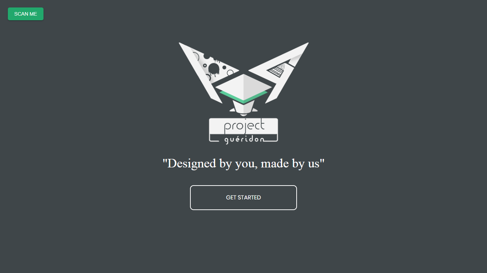
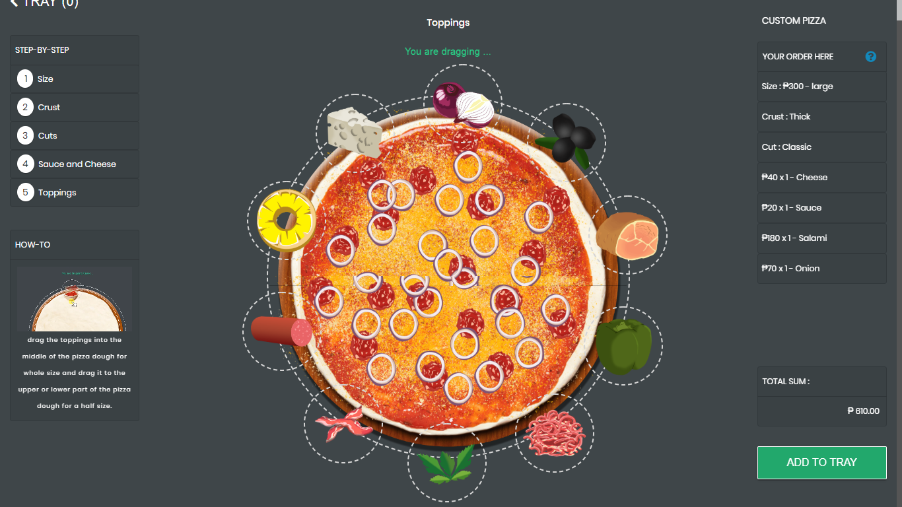
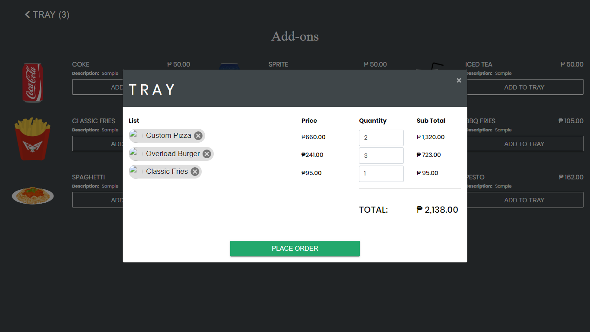
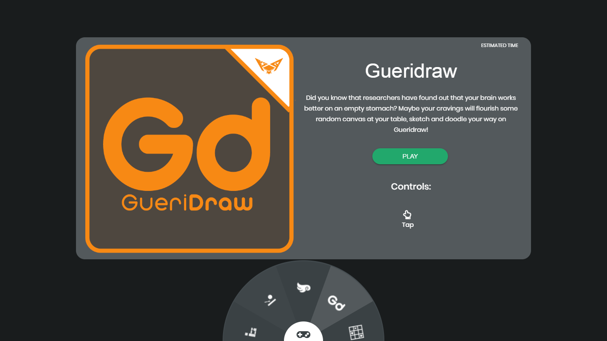
Backend
(click title for live demo)
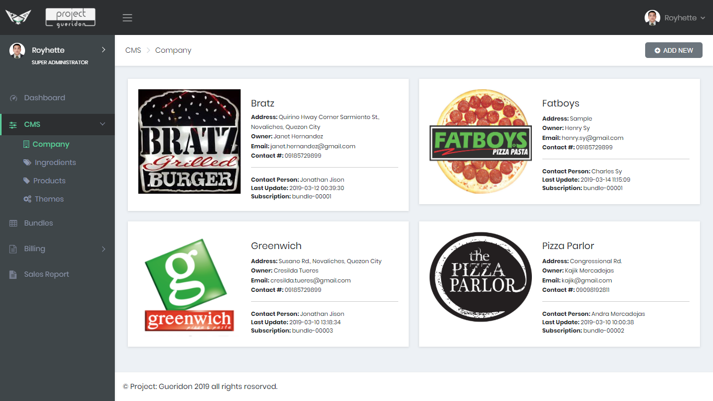
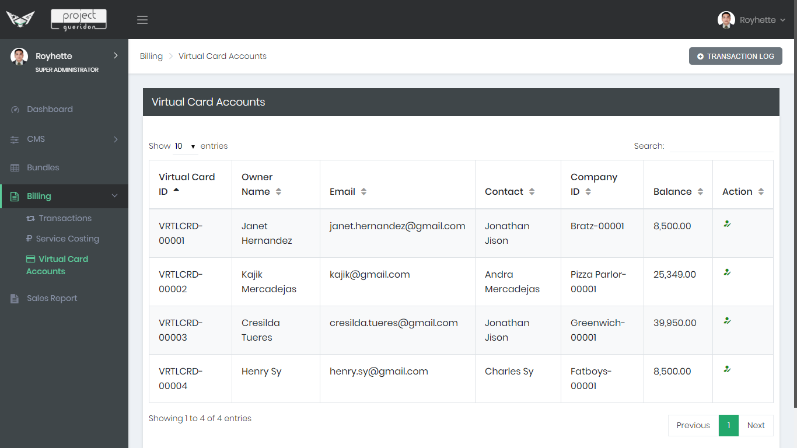
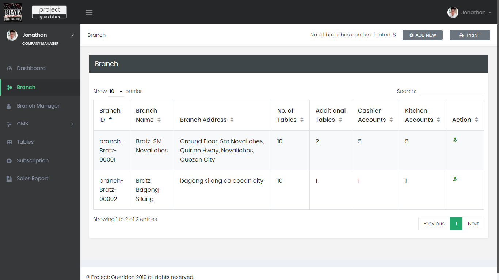
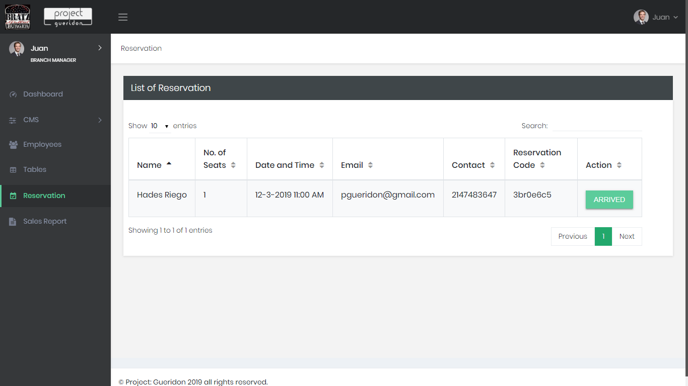
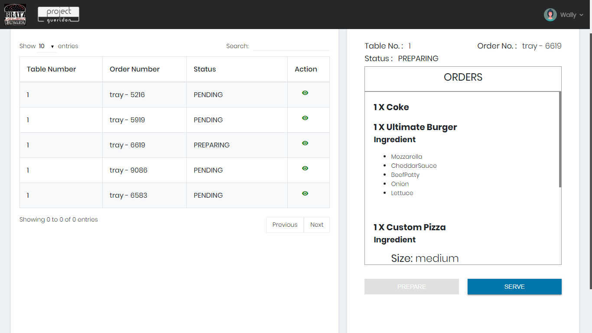
Web Portal
(click title for live demo)
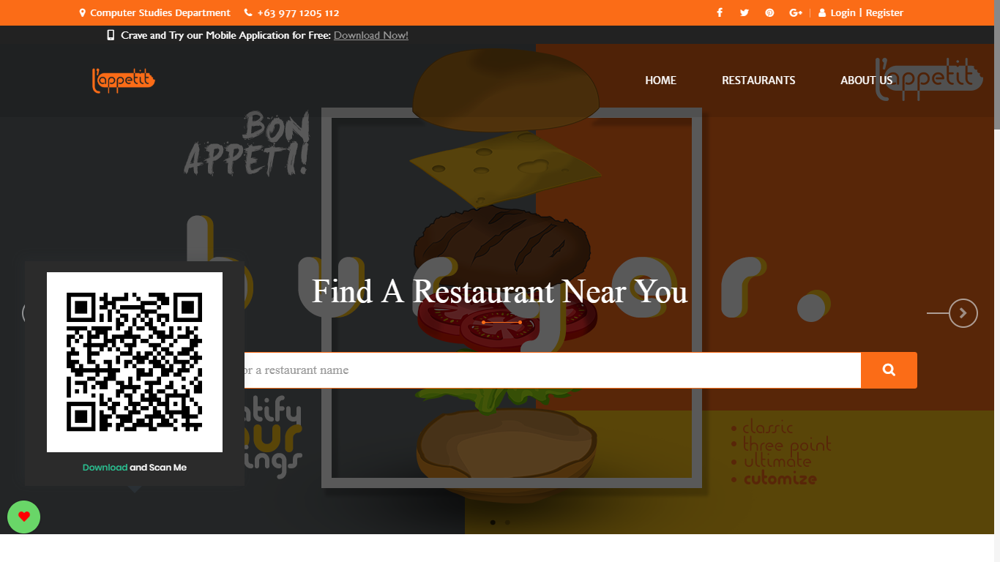
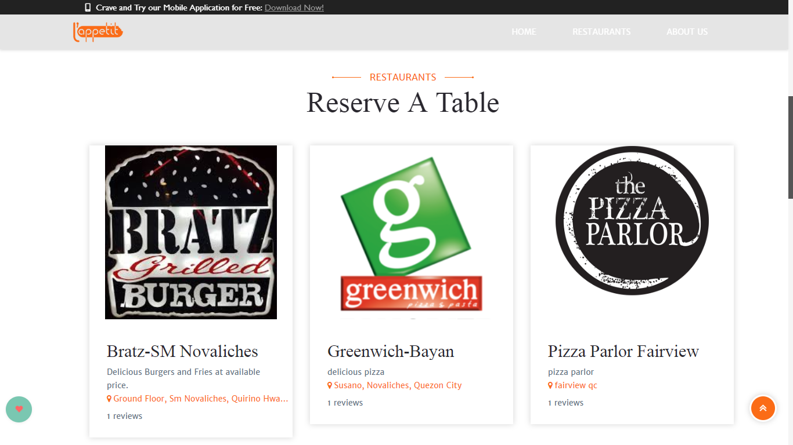
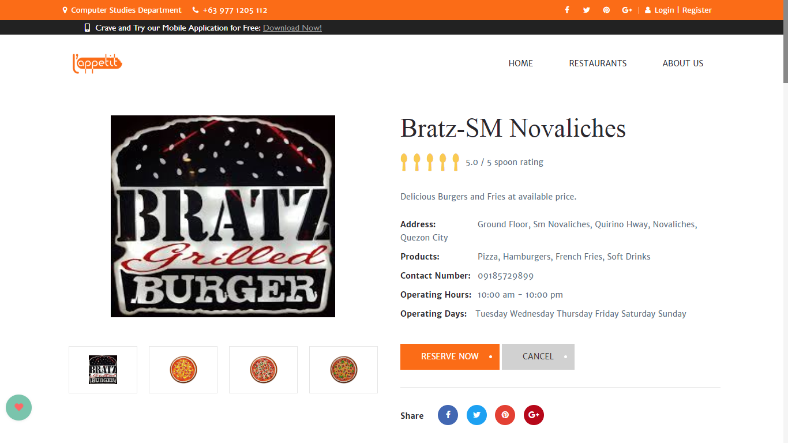
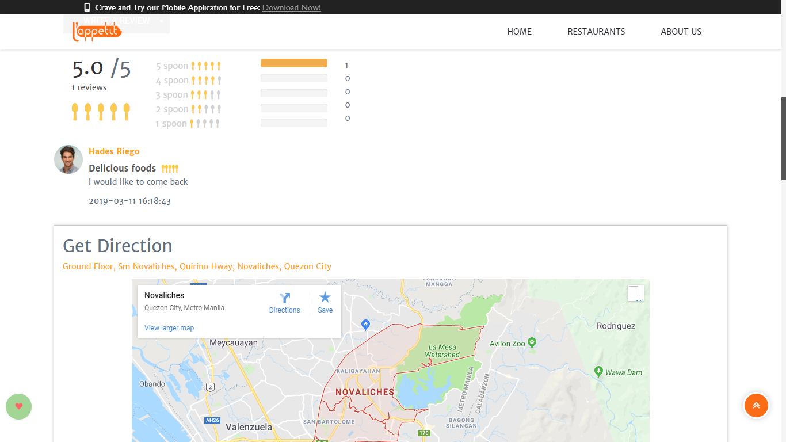
Mobile
(click title for app download)
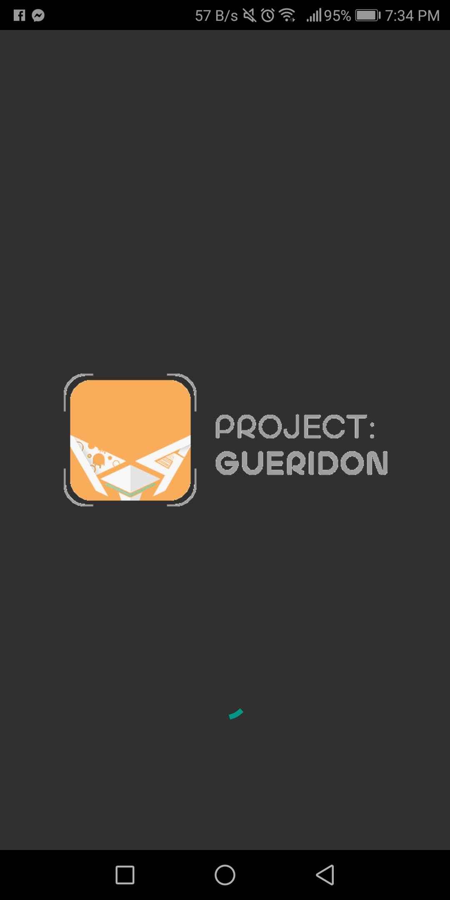
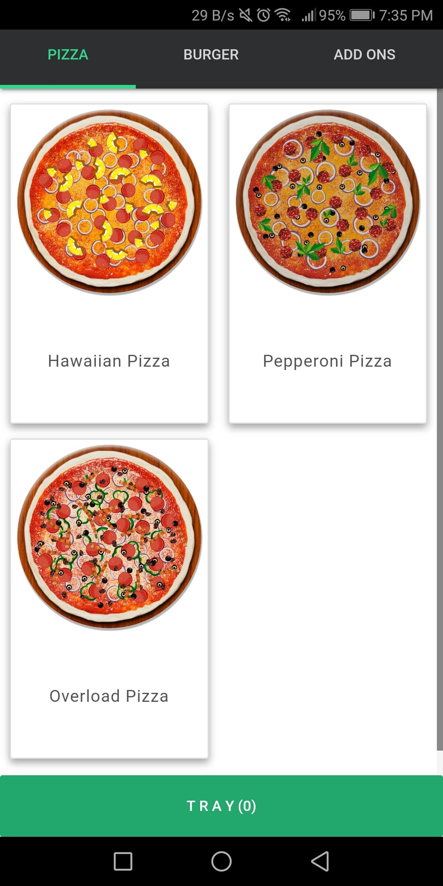
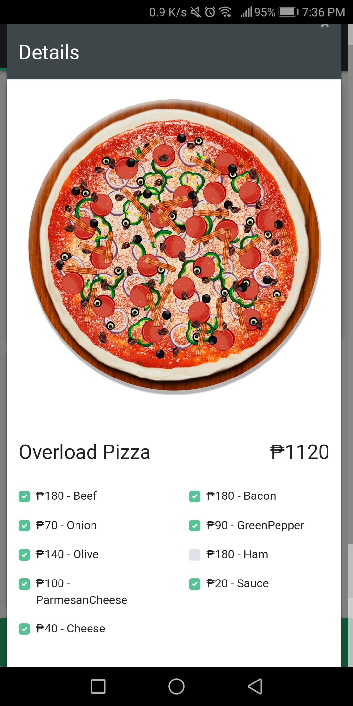
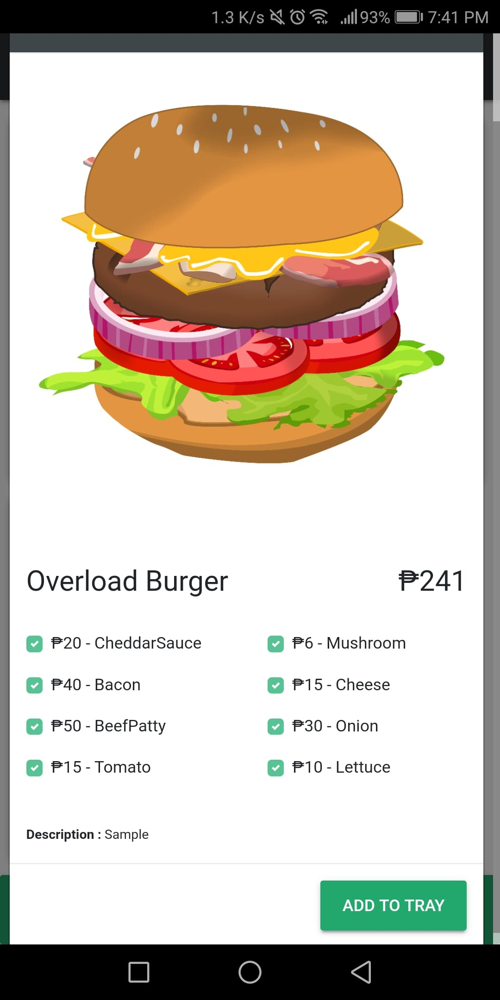
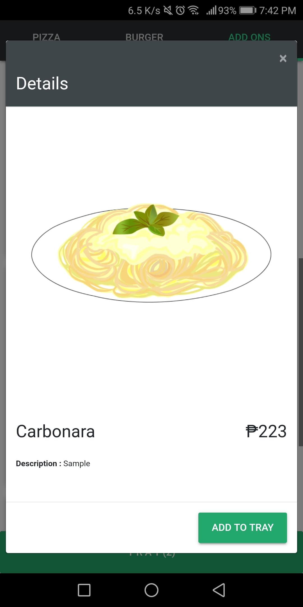
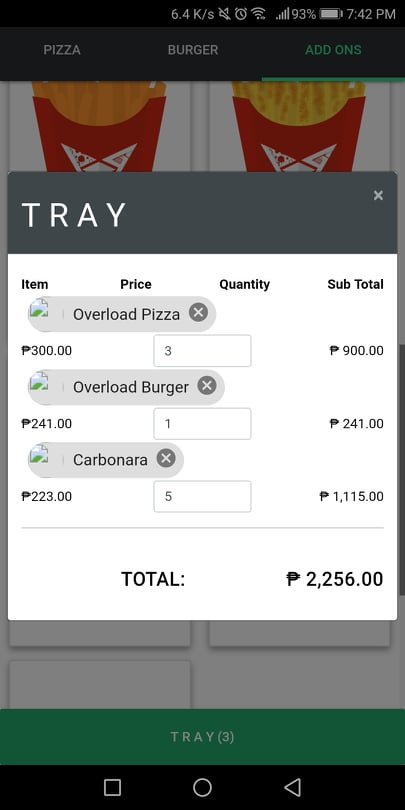